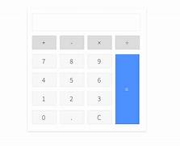
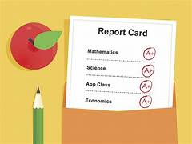
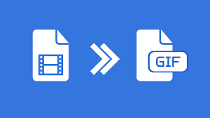

Projects

Student Management System
Friends Management System
To-Do List
Attendance Management System

Calculator

Text-to-Speech
Chatbot

Student Report Visualizations

Python Compiler

Multi-User Real-Time Chat App
